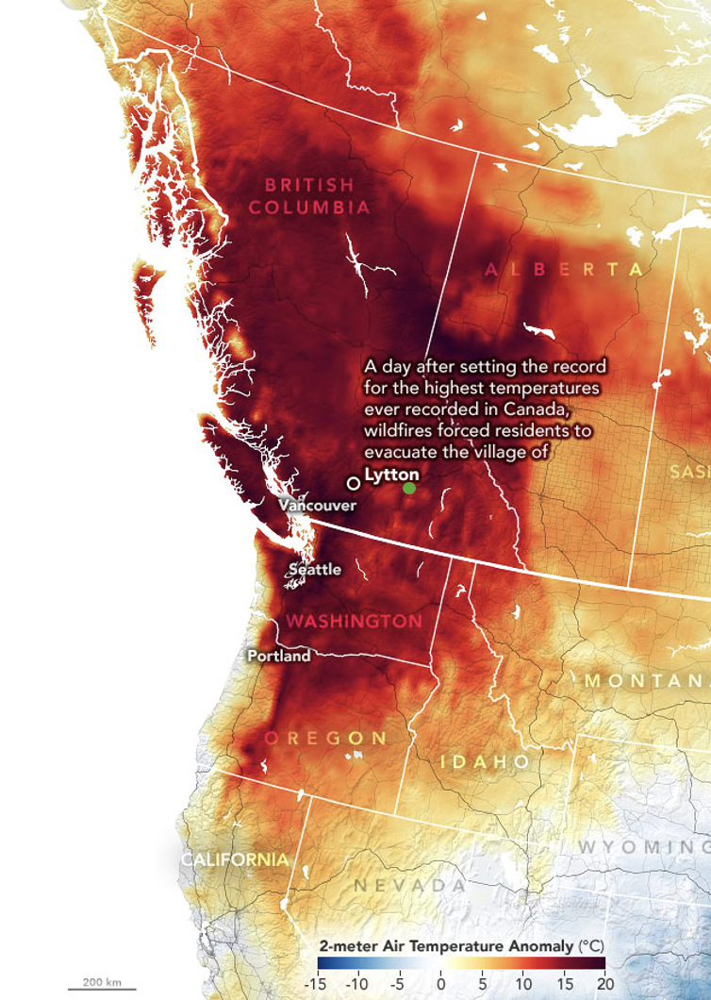
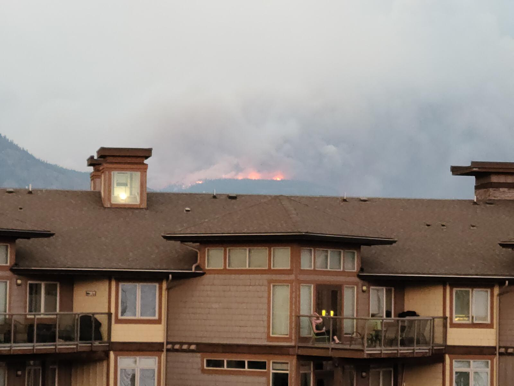

4 Week 4
4.1 Overview: Wildfires in Western Canada
This week, we have been tasked with finding a city facing an urban challenge and proposing how remotely sensed data could be used to address the challenge. Prior to starting this degree I spent the summer in my hometown, Kamloops. It is a small rural town in western Canada. The climate of the region is known as a semi-arid desert. The land cover is predominantly grasslands and forest. With the acceleration of climate change, western Canada has been experiencing severe heatwaves and droughts. The increasingly dry conditions have led to an exponential increase in wildfires.
During this summer air quality were at hazardous levels due to the smoke from the wildfires. Several communities were evacuated, including Lytton, a small town near Kamloops, was evacuated and destroyed by a wildfire. Several statistics I found:
Insurance Bureau of Canada reported 78 million CAD in damages
The fire destroyed 90 percent of the village, killed two people and forced the evacuation of nearby First Nations communities
The fire largely leveled Lytton’s Main Street, burning the post office, ambulance station, health centre, RCMP detachment, Lytton Hotel and the Lytton Village Office
The Lytton Chinese History Museum was lost, along with 1,600 artifacts, museum archives and library
Kamloops is denoted in the following image as a small green dot on the following NASA visualisation of average temperatures in summer 2021.
Wildfires are quickly approaching the Kamloops city limits and burned three houses last summer and the entirety of the city’s north shore was evacuated. Below is an eerie photo taken from my apartment last summer.

4.2 Proposal: Using Remote Sensing to Address Wildfires
The use of remote sensing to monitor and predict wildfires is not a new concept. However, the technology has been underutilised in Canada. The Canadian government has been slow to adopt new technologies and has been relying on traditional methods to monitor and predict wildfires. The traditional methods include the use of weather stations, satellite imagery, and aerial photography.
These methods are not as effective as remote sensing technology. Remote sensing technology are able to provide real-time data on the location, size and intensity of wildfires. This data can be used to predict the spread of wildfires and to develop strategies to contain them.
4.3 Approach
4.3.1 Wildfire Monitoring in Kamloops: A Remote Sensing Approach
Given the uptick in wildfire incidents around Kamloops, BC, driven by drier conditions, there is a need to actively monitor and predict these events. Remote sensing offers a lot of promise here, providing frequent, detailed data that can change the game in terms of understanding environmental triggers for wildfires, catching them early and forecasting their movements.
Based on the teachings and research I’ve done, I’ve taken a stab at outlining how the use of remotely sensed data can detect and predict wildfires in BC.
4.3.2 Heat Maps & Fire Detection
We can use Land Surface Temperature data from satellites like Landsat or MODIS to spot unusually hot areas that might indicate a fire or a high-risk zone. VIIRS data is incredibly useful for identifying thermal anomalies which allow us to pinpoint fires almost as soon as they start.
4.3.3 Soil Moisture & Dryness
Rainfall data from the Global Precipitation Measurement mission gives us information on recent precipitation patterns, affecting soil moisture levels and by extension, wildfire risk. The SMAP satellite can tell us how moist the soil is, and when it’s super dry, the risk of wildfires is high.
4.3.4 Vegetation Health
What’s on the ground plays a massive role in how wildfires behave. We can check out the health of vegetation and the types of land cover in the area using data from Landsat or Sentinel-2 satellites. If there is significant dry and unhealthy vegetation, it’s like laying out a welcome mat for wildfires.
4.3.5 Trends & Predictions
By digging into historical data on wildfires, weather patterns, and how land use has changed over time, we can start spotting trends and potential hotspots for future fires. We can then feed this data into machine learning models to forecast where and when the next big wildfire might hit, giving us a head start on preparations.
4.4 Strategy & Implementation
Gather and Prep the Data: Attain relevant datasets (LST, thermal anomalies, rainfall, soil moisture, vegetation health) for Kamloops and ready them for analysis.
Identify Hotspots: Using the thermal and LST data, we can keep an eye on current and potential wildfire zones.
Assess the Risk: We’ll mix soil moisture data with vegetation health and past wildfire info to figure out which areas are most likely to catch fire.
Forecasting Fire: Leverage machine learning to assess the trend data and output predictions on future wildfires, including where they might start and essentially how they could spread.
Make It Usable: Develop dashboard / interface for local emergency services, fire departments and planners to access and use data/models in real-time.
4.5 Reflections
This approach is based upon being proactive rather than reactive when it comes to wildfires in Western Canada. By harnessing the power of remote sensing, we can significantly improve how we monitor, react to and predict wildfires, ultimately saving resources, properties, and lives.
It’s clear the tech and data are at the level to conduct this analysis. The challenge is integrating this approach into current operations, raising awareness and getting the backing needed from policies and funding. As municipalities in western Canada such as Kamloops look to adapt to the changing climate, it’s crucial that they embrace these advanced monitoring techniques and work closely with the scientific community to customise these solutions to their specific needs and challenges.